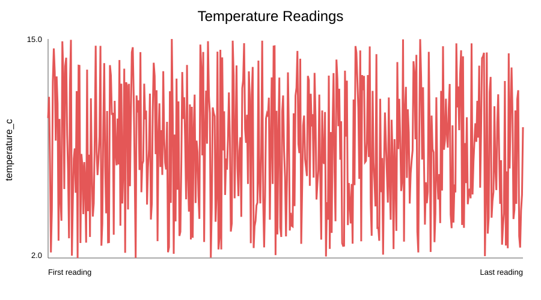
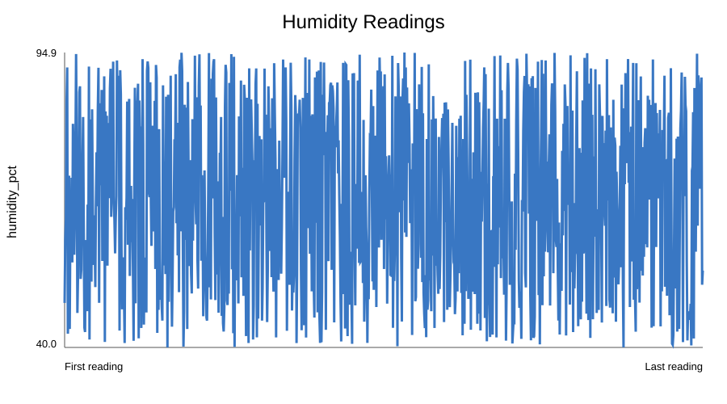
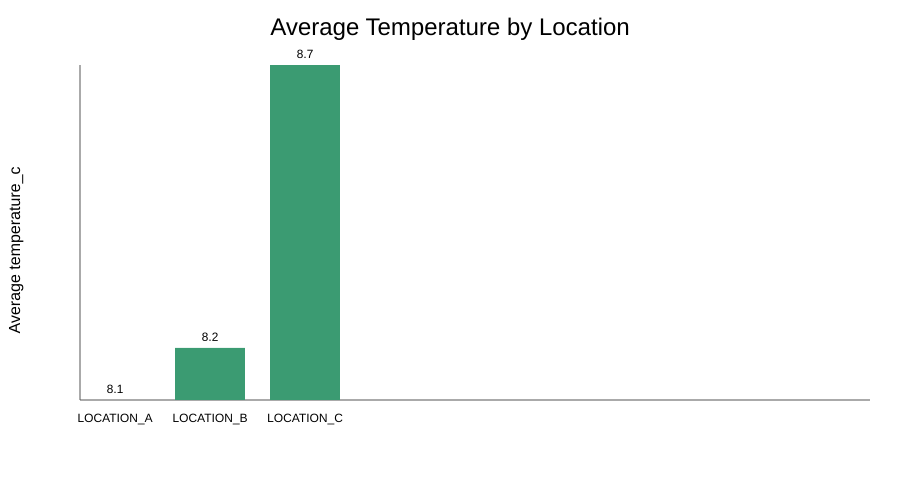

Temperature readings
Temperature across the recorded samples

A clear view of temperature, humidity, and location-level readings from the validated sensor dataset.
Temperature across the recorded samples

Humidity across the recorded samples

Compare average temperature across sensor locations
